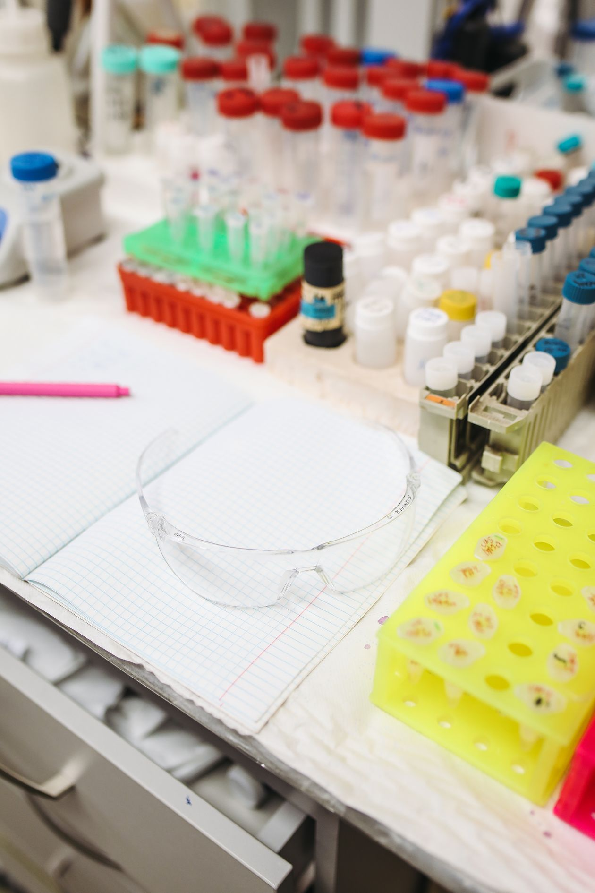

Review docket · D.04 — enquire
Open an enquiry.
Four fields and a work type. That is all an enquiry needs — the review process itself will ask for the rest, through the right channel, after intake.
Before you write
Never send sequence details through this form — or by ordinary email. Screening material moves only inside the review process, through the secure channel arranged at intake. An enquiry needs your organisation and the type of work, nothing more.
Enquiry filed — in this demonstration.
Your reference is OSR-ENQ-0000.
On the live site, the reply comes from Dr Osei within two working days: intake first, the secure channel for screening material arranged there, and screening results within five working days of a complete intake. Nothing you typed has been sent or stored.
Direct, for the record
enquiries@oseisynthesis.example
The same rule applies to email: organisation and work type only. If a first message arrives carrying sequence material, it is deleted unread and the enquiry is declined — for the sender's protection as much as the practice's.
What happens next
- Intake — identity and facility confirmed; the file opens.
- Screening — inside the review process, through the secure channel; results within five working days.
- Review — yield arithmetic and design, in scheduled day blocks.
- Report — the findings in writing. A refusal, if that is the finding, arrives the same way: in writing, with the reason at the level the lists allow.
